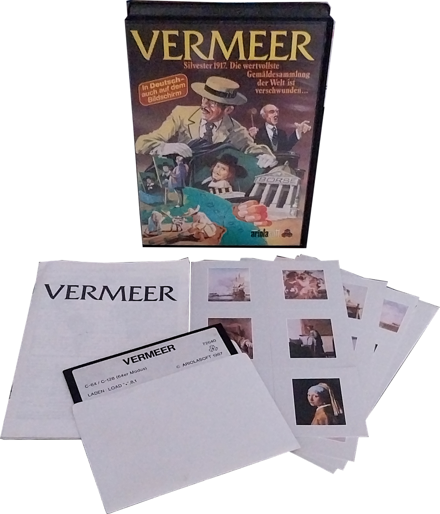

Entwickler: Ralf Glau
Publisher: Ariolasoft
Genre: Wirtschaftssimulation
Plattform: Amiga, Atari ST, DOS, Commodore 64
Erscheinungsjahr: 1987
In Vermeer übernimmst du die Rolle eines jungen Erben, der genügend Vermögen erwirtschaften muss, um die wertvollen Gemälde seines verstorbenen Onkels zurückzukaufen. Durch den Handel mit Kaffee, Kakao, Tee, Baumwolle und anderen Rohstoffen baust du Plantagen auf, investierst geschickt und reist rund um die Welt, um dein Handelsimperium auszubauen.


Vermeer überzeugt auch heute noch durch seine außergewöhnliche Kombination aus Handel, langfristiger Planung und entspannter Spielgeschwindigkeit. Der weltweite Rohstoffhandel und die Jagd nach den berühmten Gemälden verleihen dem Spiel einen ganz eigenen Charme, der bis heute kaum kopiert wurde.